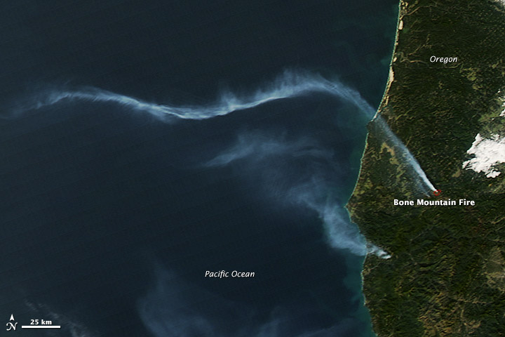

Wildfire Siege
The 2014 Pacific Northwest Fires
An Air National Guard fighter flies in front of the pyro cumulus column of a 2014 wildfire. More than 5500 wildfires ignited – 93 became large fires. The largest fires ever recorded in Oregon and Washington both burned on one day in July.
Scroll down to continue
Pacific Northwest Coordinating Group
The Pacific Northwest Wildfires of 2014
The fires of 2014 seemed to be a continuation of the 2012 and 2013 fire seasons. Firefighters had no real down time between the fall fires of 2013 and the unprecedented rash of fires on the Oregon coast in January, 2014. During these incidents, Oregon firefighters were engaged in full wildland fire suppression activities only four days into the new year.
When it did rain in February and March, the weather brought disaster to a neighborhood near Oso, Washington where emergency responders, usually called for fires, were on the ground to assist. Washington Department of Natural Resources incident management teams responded to coordinate rescue operations, along with many DNR and other agency employees, local firefighters, and volunteers.
On the East Side, the rains triggered a drastic increase in fine wildfire fuels with a flush of grass and wildflower growth that created an unbroken, highly flammable carpet beneath trees and brush.
Oregon’s largest fire on record exploded through the High Desert brush and dry grass on private and BLM-protected lands near Burns. The fire grew so large, mostly in one day, the perimeter exceeded the freeway distance from Yreka, California to Portland, Oregon.
Weather and Difficult Fire Seasons
Fire season difficulty depends on five things
• Fire resiliency
of vegetation and other fuels including
homes
intermingled with fire-prone wildlands
• Topography
• Availability and capacity of firefighters
• Ignitions (even under bad conditions, if fires don't start there is no season)
•
Climate and Weather

Our current wildland fuels problem has developed slowly over many years. Forests are denser and gaps normally seen in the drier forests have filled in so fire can spread unimpeded. Vegetation has grown into the spaces that once separated fire on the forest floor from the treetops. In the desert, invasive species have created a continuous carpet of highly flammable grasses where bunch grasses once grew in clumps with space between them.
In the past several decades, homes and businesses have spread into wildlands creating the wildland urban interface (WUI) where buildings and people intermingle with or boarder on flammable wildland vegetation. Buildings, woodpiles, propane tanks, vehicles, and the like add to fuels. Human life at risk adds to the complexity of firefighting and preparation.
Steep slopes, canyons, saddles, and holes make firefighting more difficult and hazardous. Oregon and Washington are characterized by difficult terrain.

The Pacific Northwest Coordinating Group can call upon well-staffed, equipped, and trained firefighters from local, state, and federal governments and on highly skilled private, commercial firefighters. When those resources are committed, more firefighters can be brought in from other states and even other countries if needed.
The Northwest Interagency Coordination Center provides logistical support and intelligence for anticipated and on-going wildfires for all federal and state agencies in the Pacific Northwest. The center also supports emergencies other than wildfires such as floods, volcanic eruptions, and earthquakes.
Region-wide planning and coordination are provided by expert fire and emergency management staffs of the agencies that are part of the Pacific Northwest Wildfire Coordinating Group.
Wildfires are started by people and lightning. Lightning can be predicted but not prevented. Most human-caused fires can be prevented.

Climate controls fire to a large degree. The wet western side of the Cascades burns less often than the dry east side. Historically, coastal forests burned only once every 200-400 years. East side dry pine forests may have burned as often as every five years.

Weather drives fire seasons from year to year. Hot, dry, windy weather is bad fire weather. Storms that generate many lightning strikes with little rain light hundreds of fires that soon require all firefighting resources close at hand.

Rare Wildfires Burn in January
Four days into the New Year, the first official wildfire of 2014 ignited when conditions caused the escape of fires meant to reduce fuels by burning limbs and other logging slash. The first wildfire burned 549 acres near the Oregon coast, and cost almost $300,000 to control.

The fall of 2013 was considerably drier than normal. In January on the Oregon coast, it hardly rained at all. Normally the coast experiences rain on two out of three days during January. More than 10 inches of rain typically fall in the month. In 2014, not quite 2 inches of rain were recorded by January 24.
On January 22, the National Weather Service issued a Red Flag Warning for Southwest Oregon because of low relative humidity and predicted east winds. A Red Flag warning alerts wildland fire managers to weather conditions that could result in fire starts and cause fires to burn hot, spread rapidly, or behave erratically.
Over the next two days, escaped slash burns throughout Western Oregon burned over 1,000 acres. In January alone, 21 wildfires burned more than 1,600 acres in Oregon. The 10-year average for the month of January is 17 acres burned (ODF)
Pacific Northwest Wildfire Coordinating Group Prepares
The severity of the 2014 fire season in the region was predicted early, said Bobbie Scopa, Deputy Regional Fire Director for the Bureau of Land Management and US Forest Service in Oregon and Washington. "There was a dry fall and winter with little precipitation. It's not like when it's wet in the fall and the fuels are wet going into the winter freeze. Fuels were dry all winter. We were getting large fires on the coast in January."

The decision was made early to ramp up preparedness of firefighting resources as the fire season developed. The BLM, Forest Service, Oregon Department of Forestry, and Washington Department of Natural Resources were all agreed. "Nationally, people were supportive of our plans... they saw the same things we did."
A key element of the preparedness decision-making process was pre-positioning of resources as fire conditions worsened. "We had extra engines, dozers, hand crews, and initial attack crews from back east. We got extra helicopters to units with special severity funding. We had 14 or 16 single engine air tankers across the geographic area almost the entire summer when we normally have four,” reports Scopa “There were three water scooping air tankers, three or four air tankers at Moses Lake, two or three at Redmond, and two or three at Medford. These were supplemented by aircraft from Boise, Idaho and by the DC-10 jet air tanker until it was needed for fires in northern California."
National Fire Prevention Teams ordered
To counteract the increased threat of human-caused wildfires during the approaching season, the PNWCG ordered a National Wildland Fire Prevention Team. The team’s assignment was to support the prevention efforts of field units and to build fire prevention capacity. Capacity building included increasing the number of prevention personnel in the Pacific Northwest qualified to serve on or lead fire prevention teams.
The first National Fire Prevention and Education Team arrived on June 16. The last team left on September 26.
Work began with an assessment of human causes of wildfires across the region. Ignitions were mapped. Field visits and telephone interviews documented some of the problems related to human-caused fires. Current fire prevention programs were described so as to be better supported. Communication needs and networks were identified. Community concerns were researched and identified.

A twitter account and website were developed to enhance communication among field units and to disseminate communication materials and practices. Prevention products were developed and distributed to the field. A concerted outreach process was implemented to engage partners in collaborative programs.
Prevention capacity was developed through involvement of personnel from around the region on the prevention teams. A long-term plan was developed to train and staff several prevention teams in the region. These prevention teams were able to address the immediate threat of human-caused fires by reinforcing established fire prevention programs throughout the region. Capacity-building efforts will leave the region better prepared to cope with emerging human-caused wildfire threats in future years

A Wet Spring
Incident Management Teams assist at fatal landslide
Precipitation seldom fell throughout Oregon and Washington during the fall of 2013 and into December and January, 2014. However, rains returned in February and March, making up much of the deficit, particularly over the northern part of the region west of the Cascade Mountains.

While the rains provided welcome – if temporary – relief to the persistent statewide drought, they spelled disaster for a neighborhood near Oso, Washington.

Incident Management Teams best known for managing large wildfires are, in fact, all-risk teams. In addition to wildfires, they respond to emergencies from floods and hurricanes to earthquakes and terrorist attacks.
For information on National Incident Management teams. For more information about National Incident Management Organization (NIMO) teams.
The Washington Department of Natural Resources sent a Type 3 incident management team the same day. Incident management teams provide leadership, logistics, planning, and operational support. They pay and account for costs, order resources, assist the media to safely cover the incident, and provide information to help affected people cope with the disaster.
This is from the Team’s website
At 10:37am on Saturday, March 22, 2014, a massive landslide swept through the Stillaguamish Valley and through the community of Oso, WA, burying hundreds of acres and dozens of homes. The Northwest Washington Incident Management Team was requested by the City of Arlington and Snohomish County to assist in organizing and managing the search and rescue effort for potential survivors of this unfathomable incident.
The first members of the team arrived at the emergency operations center established in the City of Arlington shortly before 5 pm, and immediately began to work with local officials to establish response priorities and objectives, develop a response strategy, and identify resources to implement the response plan.
The team continued to coordinate the on-scene search and rescue efforts of hundreds of local and regional professional responders and volunteers throughout the week, as significant additional state and federal resources were brought in to further assist in the response effort.
At 6 am on Saturday, March 28, the team was demobilized as a Washington State Type II IMT transitioned into the management and coordination role for the continued victim recovery efforts.
On Wednesday, April 23, the team was re-activated to assist in preparing for the transition and demobilization of the official search and recovery efforts at the slide site. That transition occurred the evening of Monday, April 28, 2014.
Incident Management Teams

Desert rains stimulate growth, later fueling fires
On rangelands and in dryer forests east of the Cascades, spring rains broke the drought long enough for grasses, wildflowers, and other low growing vegetation to put on significant growth. As weather dried out again the lush vegetation cured to a highly flammable, continuous carpet beneath the sagebrush and trees. When lightning ignited wildfires in July and hot, dry winds blew, fires spread quickly. The Buzzard Complex on rangelands 45 miles southeast of Burns, Oregon burned 395,747 acres, most of it in one intense day.
Weather extremes that led to fires in January on the normally wet Oregon Coast and a deadly landslide triggered by intense rains characterize the 2014 fire season. Later, the unprecedented one-day run of the Carlton Complex fires that burned 400 square miles and more than 300 homes will be followed by intense rains that flood fire camp, wash away roads, and endanger firefighters.
If experiences with wildfires since the turn of the century suggest a “new normal”, perhaps we should expect more complex fires seasons rather than longer, dryer, hotter fire seasons. Perhaps the new normal is characterized more by weather patterns for which we are not prepared, including more extreme weather on both ends of the spectrum.